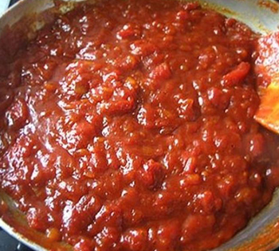
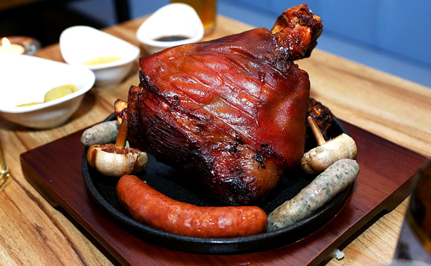
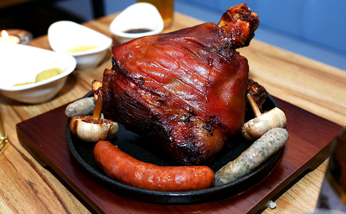
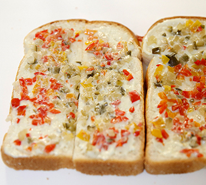

FOOD
커리부어스트
독일의 대표적인 식자재인 소시지를 이용한 간식으로 소시지에 카레소스를 얹고 감자나 빵과 함께 곁들여먹는 음식이다. 소스는 커리가루를 베이스로 케첩, 머스타드 등 기호에 맞는 양념들을 넣고 만들어주는 것이 일반적이며, 독일에서 가장 흔히 볼 수 있는 길거리 음식이다. 미국 등지에서 푸드트럭 메뉴로도 사용될 만큼 조리 과정이 간편하고 어린이들이 좋아할 법한 맛을 가졌다.
Recipe
-
메론빵 만들기
2인분기준 재료 : 소시지300g, 캔 토마토2.5컵, 설탕1/2컵, 양파1개, 파프리카 가루 1Ts, 레드와인 식초1/4컵, 커리가루2Ts, 후츄 약간, 소금 약간 -
1. 양파 한 개를 곱게 썰어준다.
-
2. 양파가 익으면 커리가루와 파프리카가루를 넣어준다.
-
3. 재료가 타지않게 약 1분간 저어준다.
-
4. 준비해둔 토마토 캔을 손으로 으깨가며 주스까지 모두 넣어준다.
-
5. 토마토 캔을 다 넣은 뒤 불을 세게 높이고 설탕과 레드와인 식초를 넣어준다. (일반 식초로 대체할 수 있지만, 농축 식초라면 비율에 따라 양을 가감해준다.)
-
6. 만들고 있는 소스가 타지 않도록 간간히 저어주면서, 기름을 넉넉히 두르고 소시지를 구워준다.
-

7. 소스가 케첩보다 약간 묽은 정도로 졸아들면 후추와 소금으로 살짝 간을 한 뒤 불을 끈다.
-

8. 소시지를 잘라 접시에 담은 뒤 커리 소스를 넉넉히 얹고, 그 위에 커리 가루를 솔솔 뿌려줍니다.
 

슈바인학세
돼지를 의미하는 슈바인(Schwein)과 동물의 발목 위 관절을 의미하는 학세(Haxe)의 합성어로, 돼지의 발목 윗부분을 구워 요리한 독일 전통 음식이다. 모양은 우리나라의 족발과 비슷하지만, 돼지의 정강이 부분을 삶은 후 이를 다시 굽는 방식으로 조리하기 때문에 식감은 슈바인스학세가 더 부드럽고 바삭하다. 주로 양배추를 발효시켜 만든 자우어크라우트(Sauerkraut)와 으깬 감자 등을 곁들여 먹는다. 맥주와 잘 어울리는 음식으로 독일의 맥주 축제 등에 빠지지 않는 메뉴이며, 특히 독일 남부 바이에른 지방에서 즐겨 먹는다.
Recipe
-
재료 : 돼지 뒷다리 정강이살 1덩어리, 물 1L, 맥주 1L, 양파 1개, 월계수잎 1장, 정향 반큰술, 미림 소스: 표고버섯 2개, 데리야키소스5큰술 스테이크소스 6큰술, 발사믹식초 2큰술, 설탕 1큰술, 물 1/2컵
-
1. 돼지고기는 찬물에 2시간 정도 담가 핏물을 뺀 후 큰 냄비에 물과 맥주를 1:1 비율로 넣고 양파, 월계수잎, 정향을 넣고 30분정도 삶고 미림 1컵을 넣어 돼지고기 특유의 누린내를 잡는다.
-
2. 버섯을 굵게 다지고, 팬에 기름을 약간 두르고 버섯을 볶다가 소스를 붓고 끓여 소스를 만든다.
-
3. 칼로 껍질에 칼집을 넣어 150도로 1시간30분, 210도로 10분 굽는다.
-
4. 구운 돼지와 만들어둔 소스를 함께 곁들여 먹는다.


청어 샌드위치
빵 사이에 절인 청어와 각종 녹색채소, 양파, 토마토 등을 기호에 맞게 끼워넣고 먹는 독일에서 흔히 볼 수 있는 길거리 음식이다.
보기와는 다르게 특별한 짠내나 비린내가 전혀 느껴지지 않아 부담없이 맛 볼 수 있다.
빵종류에는 바게트빵, 호밀빵 등이 있고 청어도 생청어, 구운청어, 절인청어 등이 있어 기호에 맞게 즐길 수 있는 음식이다.
Matjes - 청어
Rauchmatjes - 구운청어
Bism arckhering - 절인청어
Recipe
-
2인분기준
재료 : 식빵4쪽, 훈제연어 5장, 양파 1/2, 베이비채소 두 줌, 피클 조금, 로즈마리, 레몬즙. 후추 소스 : 마요네즈 2큰술, 고추냉이 조금, 레몬즙 조금 샐러드 드레싱 : 레몬즙 1큰술, 올리브오일 1큰술, 소금 -
1. 연어를 넓게 펼친 후에 레몬즙, 후추, 로즈마리를 뿌려서 다른 재료를 손질하는 동안 잠시 재워준다.(10~15분)
-
2. 양파는 곱게 체 썰어서 차가운 물에 담아서 매운기를 빼준다.
-
3. 피클을 잘게 다져준다. (파프리카나 오이 등 다른 재료를 함께 다져도 좋다.)
-
4. 마요네즈에 고추냉이를 조금 넣어서 잘 섞어주고 기호에 따라 레몬즙을 추가한다.
-
5. 베이비채소는 레몬즙, 올리브오일, 소금 약간을 넣고 버무려준다. 이 때 달콤한 맛을 원하면 꿀이나 레몬청을 넣어줘도 좋다.
-

6. 빵 위에 만들어둔 소스와 다진 재료들을 올린다.
-
7. 연어-양파-베이비채소 순서로 올려준다.
-
8. 완성